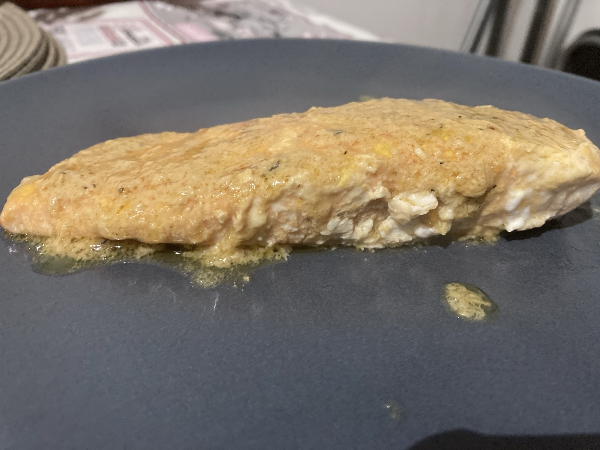

Lomo de salmón a la naranja
320 kcal/ración21 g proteína4 cuch. aceite2 racionescomida, cenasodio alto
Receta propia.

Ingredientes (2 ración/es)
- 200 g de lomo de salmón (2 filetes de 100 g) (salmon)
- zumo de naranja (medio vaso, unos 100 ml) (zumo-naranja)
- 2 cucharadas de salsa de soja (salsa-soja)
- 2 cucharadas de vinagre (vinagre)
- 4 cucharillas de aceite de oliva (aceite-oliva)
Pasos
El modo voz usa el reconocimiento de voz del navegador. En Chrome, el audio se envía a los servidores de Google para transcribirlo; en otros navegadores puede procesarse en el propio dispositivo. Si prefieres no usar el micrófono, los botones de abajo funcionan igual.
- Poner los lomos a marinar en el zumo de naranja durante 20-30 minutos.
- Calentar la plancha y hacer los lomos vuelta y vuelta hasta que esté dorado por fuera y hecho por dentro.
- Mientras se hace, mezclar en el propio zumo de naranja la salsa de soja, el vinagre y el aceite, removiendo bien, y añadirlo a la sartén para que se vaya cocinando junto al lomo.
- Cuando los lomos estén en su punto, sacarlos a un plato y dejar la salsa sola en la sartén.
- Subir un poco el fuego y reducir la salsa hasta que espese y quede melosa.
- Echar al lomo con la salsa reducida y servir.